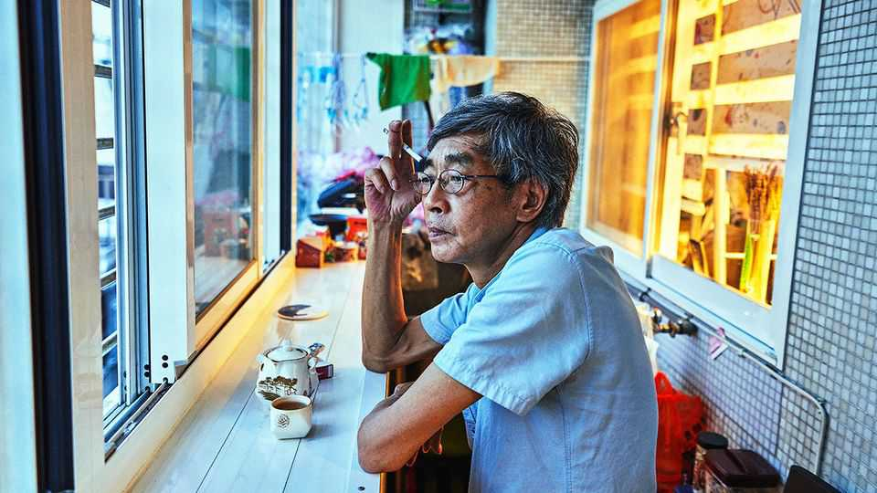

Lam Wing-kee, the bookseller who would not admit defeat
The Hong Kong bookseller died on July 2nd, aged 70

Jul 30th 2026
It was the softness that frightened him. As he looked around his cell, he suddenly realised that the whole room looked as though it had been babyproofed: everything was wrapped in padding. The chairs and desks had been covered; the walls were softly padded; even the tap was swathed in plastic. If he had tried to dash his head against any of it, he would not have been able to break any bones. But why would you try to smash your head against a wall unless you were mad? That was when he felt afraid. People, he suddenly realised, had lost their minds in this cell.
Almost everything that happened to Lam Wing-kee in those days felt unreal. Once, long before his arrest, before Hong Kong had been handed back to China in 1997, his life had been normal, quiet even. Every day he had set out in his blue shirt and glasses, with his sweep of unruly grey hair, to his shop, Causeway Bay Books. It was such a simple little store; it sat, narrow and neat as a shelved book, between the Wing Lee Dispensary and a fancier lingerie shop. Its aim was simple too: he just liked reading. When they arrested him, they had said he had committed a crime. But he had committed no crime; he was just selling books.
And he wanted to sell them in Hong Kong. Later, much later, after his arrest, after the people of Hong Kong had streamed onto the streets to protest against it, people would ask him why he had stayed in Hong Kong. He had replied: why would he go? He loved Hong Kong. He was Hong Kong born and raised. He remembered it from way back, when people had had nothing, no telephones or televisions—and fewer rules about what they could read. He had read everything: poetry and history and Hemingway. He read “The Old Man and the Sea”. “Man”, Hemingway had written, “is not made for defeat.” He loved that.
He loved to watch the Hong Kongers, too; their hustle, their attitude. He used to stand and watch them all: the peddlers and the stall-keepers and the streetwalkers—he even loved the jaywalkers, how free they were. And he loved that they were free to buy what books they wanted. He preferred books on politics, but the really popular volumes were the racier ones. Hong Kong specialised in books offering a bestselling blend of statesmen—and smut. Books like “Xi Jinping and His Lovers” and “The Sexual Affairs of the Chinese Communist Officials” and that semi-erotic, semi-bureaucratic hit, “The List of Overseas Mistresses of the CCP”.
You shouldn’t take those books too seriously, he thought. But you should, in Hong Kong, be allowed to sell them (even if they were prohibited in China). “One country, two systems”. That was the promise, after the 1997 handover. Though Mr Lam didn’t absolutely trust that so he set up his own systems, too. He sent his orders to the mainland via busy ports, where checks were lower; he hid books in fake dust jackets. He even had a system for when police officers stopped him: he would offer them a cigarette, crack a joke; they would all laugh, then go away. It was foolproof. And they were fools. China, he thought, was an absurd country.
Then, one day in 2015, the police officers didn’t laugh. That was when he knew he was in trouble. He was crossing the Hong Kong-China border when officers from the mainland took him aside, then more officers came over. None was smiling. They threw him in a van, took him to a police station and tied him to a chair. Panicked, he asked them what was happening. They said, “Don’t worry. If the case were serious, we would’ve beaten you on the way here.” Then they blindfolded him, cuffed him and took him somewhere—he was not told where—on a train.
Over the next eight months, he was moved from place to place and interrogated perhaps 20 or 30 times. They made him write a statement of remorse, which was hard, as he had committed no crime. He gave them an A4 page of plausible hogwash. Some lost their temper. They told him he was a “diabolic, damnable, fiendish sinner”. They said, “No one will know about this in Hong Kong, even if we crush you flat like a useless gnat!” A man is not made for defeat. But, in his padded cell, away from the news, away from Hong Kong and away from his family, he felt defeated and alone. He just ran a small bookstore in Hong Kong. Why was the mainland trying to destroy it?
Then, suddenly, in June, they let him go. He was allowed to return to Hong Kong, but he had to bring them his computer hard drive, which contained the names of all of his customers. He had no choice; he agreed. Finally, he was free. As soon as he was out he started to read the news again—and he could not believe what he saw. They had lied: Hong Kong had known about him. Moreover, Hong Kongers had taken to the streets to protest about him. He was on posters, in newspapers, on televisions. He had not been flattened like a gnat: his face had been broadcast across the world.
He stood on the street in Hong Kong, watching his beloved Hong Kongers go by: the jaywalkers, the hawkers, the hustlers—the free. Suddenly he felt so angry. What right did China have to take his freedom away? To make him do something he did not want to do? He smoked a cigarette and he remembered a poem that he had read as a child: “I have never seen/a knelt reading desk,” it ran, “though I’ve seen/men of knowledge on their knees.” If he went back to them, wouldn’t he have read all those books for nothing? He threw down his cigarette and made a phone call.
The press conference that followed would become famous. In his neat blue shirt, with his unruly hair, he spoke out after eight months of silence. He was clear, scholarly—and devastating. He said: one country, two systems exists only in name. He said, I want to tell the whole world: Hong Kongers will not bow down to brute force. The whole world watched—and the world did nothing. A few years later, he went into exile in Taiwan. He had lost his job, his home, his beloved Hong Kong. When he arrived, he simply reopened his bookstore there. For man is not made for defeat. ■